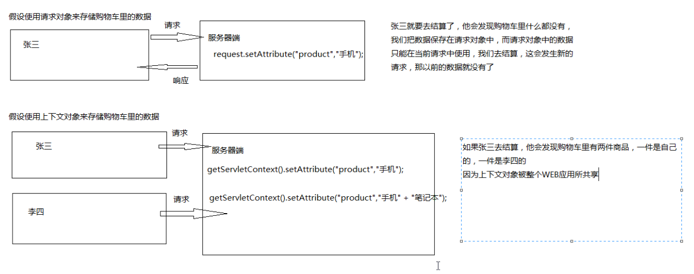
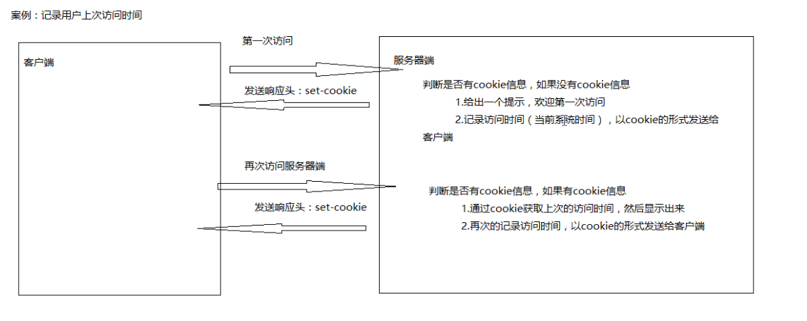
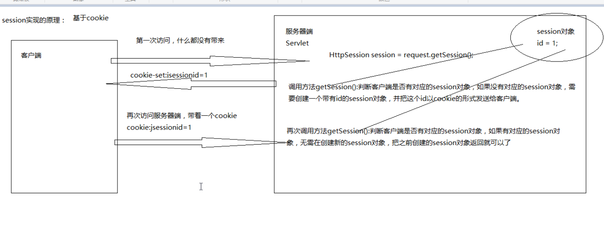
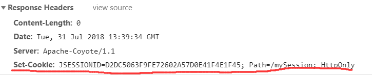
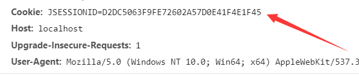
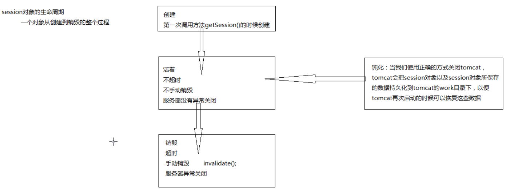

session与cookie
会话技术的概述
会话可以理解为，一个用户打开一个浏览器，在同一个WEB应用上，点击多个超链接，访问多个WEB资源，然后关闭浏览器，那整个过程我们称之为一个会话。
作用：
会话技术可以保存用户在会话过程中所产生的数据
会话技术也可以让用户在同一个会话中实现数据的共享

会话技术的分类
cookie
cokkile是一种客户端技术，程序可以把每一个用户特有的数据，以响应头set-cookie发送给每一个用户的浏览器。那最终会以文件的形式保存在用户的硬盘上，当用户再次使用浏览器来访问我们的WEB服务器，用户的浏览器会带上她特有的数据，而我们的程序所处理的则是来访用户特有的数据。
session
session是一种服务器技术，WEB服务器会在运行时为每一个用户的每一个会话创建一个其对象的HttpSession对象，由于session对象时用户独享的，所以我们可以使用session对象来保存用户在一个会话过程中所产生的数据。
session对象也是一个域对象，范围是整个会话。
记录用户上次访问时间分析

记录用户上次访问时间
1 | @Override |
封装获取Cookie对象的功能
1 | public class CookieUtils { |
cookie的细节
一个cookie只能用来标识一种信息，而cookie至少需要包含这个信息的名称和值，
一个网站可以向一个浏览器提供多个cookie，而一个浏览器也可以接受多个网站所提供的cookie
一个浏览器一般最多可以接受300个cookie，一个网站所对应的cookie最多为20个
，一个cookie大小限制为4kb
创建一个cookie对象，发送至客户端，到这个cookie他默认的级别是会话级别
会话级别：当用户关闭浏览器，会话结束了，那这个cookie也被删除了
如果需要把cookie保存在用户的硬盘上，需要设置cookie 的有效时间（过期时间）
cookie的名称和值都不可以使用中文，因为中文被认为是不安全的字符
Cookie的常用方法
- 构造方法
cookie(String name,String value); - 获取名称
String getName() - 获取值
String getValue() - 设置有效时间（过期时间）
void setMaxAge(int expiry) - 设置路径
void setPath(String url)
1 | protected void doGet(HttpServletRequest req, HttpServletResponse resp) throws ServletException ,IOException { |
记住用户名
LoginUI.jsp
1 | <body> |
1 | @Override |
session的概述
WEB服务器可以为每一个来访的用户浏览器创建一个会话对象(session)
如果需要保存用户的数据，我们的程序可以吧用户的数据保存在用户浏览器独享的session对象中，
如果用户再次的使用浏览器来访问其他的WEB资源，其他的WEB资源也可以通过session对象来获取这个用户的数据，以便为这个用户再次的服务
session对象由WEB服务器创建，我们可以通过请求对象的方法getSession()来获取
cookie和session的区别
cookie
是一种客户端技术，有大小和数量的限制，把数据保存在客户端，所以相对的不安全。
session：
是一种服务器端技术，没有大小和数量的现在，把数据保存在服务器端，所以相对的安全
session的实现原理

第一次访问Servlet

不关浏览器，第二次访问

1 | @Override |
使用session对象实现数据的共享
在不同浏览器session是不同的1
2
3
4
5
6
7
8
9
10
11
12
13
14
15
16
17
18
19
20protected void doGet(HttpServletRequest req, HttpServletResponse resp)
throws ServletException, IOException {
//获取session对象
//如果客户端没有对应的session对象，则创建新的session对象并返回
HttpSession session = req.getSession();
//获取session对象
//参数是true,如果客户端没有对应的session对象，则创建新的session对象并返回
//参数是false,如果客户端没有对应的session对象，则返回null
//req.getSession(arg0);
//设置数据
session.setAttribute("username", "wangwu");
//删除数据
//session.removeAttribute("username");
//获取数据
Object object = session.getAttribute("username");
System.out.println(object);//null
}
1 | protected void doGet(HttpServletRequest req, HttpServletResponse resp) |
使用session实现用户登陆
1 | package com.mySession.test; |
1 | package com.mySession.test; |
1 | package com.mySession.test; |
1 | package com.mySession.test; |
1 | package com.mySession.test; |
1 | package com.mySession.test; |
session对象的声明周期
当tomcat正确关闭时，session对象会保存在相应的work目录下以.ser保存，当再次启动tomcat时，文件会消失，跳过设置session属性，直接获取session属性，可以获取到相应的属性

钝化的注意事项
自定义类对象与String保存到session属性是不一样的，String自动实现了Serializable持久化接口,而我们自定义类对象并没有实现，所以当tmcat关闭后，第二次直接获取session属性得到的结果为null。
解决方法：
让自定义类实现Serializable接口